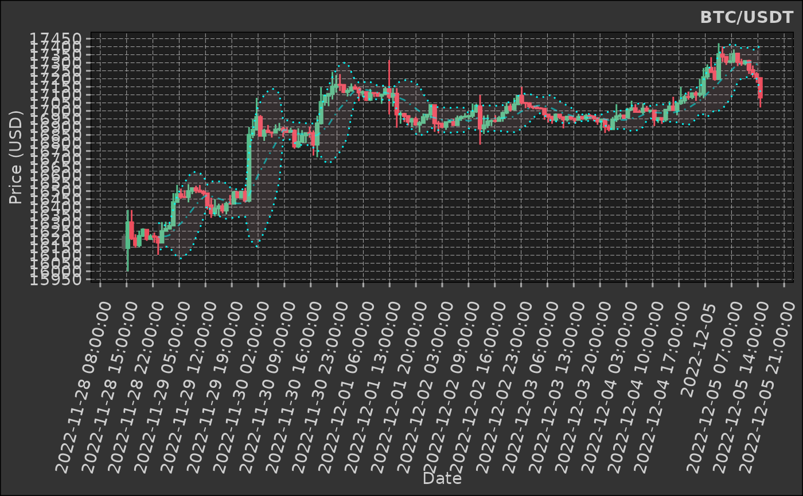

`stat_bollingerbands` is a `ggplot2` layer that allows you to plot Bollinger bands on a `ggplot2` plot either by providing a function to calculate the bands or by providing the column names of the required metrics as a `ggplot2::aes` argument previously calculated.
You are free to use whatever algorithm/function you wish as long as:
1. If using a function it must return a named `list` - and ordered - with the following elements: `"bb_lower"`, `"bb_mavg"`, `"bb_upper"`, `"bb_pct"`.
2. If using previously calculated metrics you must provide them as `ggplot2::aes` values; the `aes` must be `ymin`, `mavg`, `ymax`.
See examples for more details.
Usage
stat_bollingerbands(
mapping = NULL,
data = NULL,
geom = "ribbon",
position = "identity",
na.rm = TRUE,
show.legend = NA,
inherit.aes = TRUE,
alpha = list(ribbon = 0.1, mavg = 0.5),
linetype = list(border = "dotted", mavg = 4),
colour = list(ribbon = "yellow", border = "magenta", mavg = "magenta"),
...
)Arguments
- mapping
A `ggplot2::aes` object (required - default `NULL`).
- data
A `data.table` object (required - default `NULL`).
- alpha
A `list` with two elements "ribbon" and "mavg". These are the alpha values for the ribbon and moving average lines (optional - default `list(ribbon = 0.1, mavg = 0.5)`).
- linetype
A `list` with two elements "border" and "mavg". These are the line types for the border and moving average lines (optional - default `list(border = "dotted", mavg = 4)`).
- ...
Additional arguments passed to `ggplot2::layer`.
- linewidth
A `list` with two elements "border" and "mavg". These are the line widths for the border and moving average lines (optional - default `list(border = 1, mavg = 1)`).
- colours
A `list` with two elements "ribbon", "border", and "mavg". These are the colours for the ribbon, border, and moving average lines (optional - default `list(ribbon = "yellow", border = "magenta", mavg = "magenta")`).
Details
This is a `ggplot2` extension; it is used with the `+` operator for adding a layer to a `ggplot2` object.
Aesthetics
stat_movingaverages understands the following aesthetics (required aesthetics are in bold):
x -- datetime (x-axis)
ymin -- required lower bounds of band (y-axis)
ymax -- required upper bounds of band (y-axis)
mavg -- required center line of band (y-axis)
Examples
# \donttest{
# get some financial data
# kucoin is private package - you can use any data source
ticker <- "BTC/USDT"
dt <- kucoin::get_market_data(
symbols = ticker,
from = "2022-11-28 15:29:43 EST", # lubridate::now() - lubridate::days(7),
to = "2022-12-05 15:29:31 EST",# lubridate::now(),
frequency = "1 hour"
)
dt
#> symbol datetime open high low close volume
#> <char> <POSc> <num> <num> <num> <num> <num>
#> 1: BTC/USDT 2022-11-28 15:00:00 16215.3 16233.6 16126.0 16144.1 327.8979
#> 2: BTC/USDT 2022-11-28 16:00:00 16144.1 16382.6 16000.0 16305.9 837.5801
#> 3: BTC/USDT 2022-11-28 17:00:00 16305.9 16382.0 16195.4 16205.4 507.8351
#> 4: BTC/USDT 2022-11-28 18:00:00 16206.1 16230.7 16146.5 16162.6 252.3387
#> 5: BTC/USDT 2022-11-28 19:00:00 16161.7 16253.3 16150.1 16220.9 225.4121
#> ---
#> 165: BTC/USDT 2022-12-05 11:00:00 17295.2 17314.3 17283.8 17312.0 176.8633
#> 166: BTC/USDT 2022-12-05 12:00:00 17312.0 17318.6 17230.5 17254.5 199.6922
#> 167: BTC/USDT 2022-12-05 13:00:00 17254.5 17282.5 17208.1 17229.7 105.2655
#> 168: BTC/USDT 2022-12-05 14:00:00 17229.8 17241.4 17175.1 17205.2 140.4375
#> 169: BTC/USDT 2022-12-05 15:00:00 17205.1 17205.1 17021.6 17083.0 504.9158
#> turnover
#> <num>
#> 1: 5301836
#> 2: 13557348
#> 3: 8270203
#> 4: 4082464
#> 5: 3653147
#> ---
#> 165: 3058929
#> 166: 3447960
#> 167: 1815447
#> 168: 2416907
#> 169: 8630174
# we need a function that calculates the indicator for us
# typically I like to write my own functions in C++; in this case we will use TTR's
# the stat expects a named list to be returned - we redefine ttr
bb <- function(close, n = 10, sd = 2) {
return(as.list(as.data.frame(TTR::BBands(close, n = n, sd = sd))))
}
# calculate the short and long moving averages
dt[, c("bb_lower", "bb_mavg", "bb_upper", "bb_pct") := bb(close, n = 10, sd = 2)]
#> symbol datetime open high low close volume
#> <char> <POSc> <num> <num> <num> <num> <num>
#> 1: BTC/USDT 2022-11-28 15:00:00 16215.3 16233.6 16126.0 16144.1 327.8979
#> 2: BTC/USDT 2022-11-28 16:00:00 16144.1 16382.6 16000.0 16305.9 837.5801
#> 3: BTC/USDT 2022-11-28 17:00:00 16305.9 16382.0 16195.4 16205.4 507.8351
#> 4: BTC/USDT 2022-11-28 18:00:00 16206.1 16230.7 16146.5 16162.6 252.3387
#> 5: BTC/USDT 2022-11-28 19:00:00 16161.7 16253.3 16150.1 16220.9 225.4121
#> ---
#> 165: BTC/USDT 2022-12-05 11:00:00 17295.2 17314.3 17283.8 17312.0 176.8633
#> 166: BTC/USDT 2022-12-05 12:00:00 17312.0 17318.6 17230.5 17254.5 199.6922
#> 167: BTC/USDT 2022-12-05 13:00:00 17254.5 17282.5 17208.1 17229.7 105.2655
#> 168: BTC/USDT 2022-12-05 14:00:00 17229.8 17241.4 17175.1 17205.2 140.4375
#> 169: BTC/USDT 2022-12-05 15:00:00 17205.1 17205.1 17021.6 17083.0 504.9158
#> turnover bb_lower bb_mavg bb_upper bb_pct
#> <num> <num> <num> <num> <num>
#> 1: 5301836 NA NA NA NA
#> 2: 13557348 NA NA NA NA
#> 3: 8270203 NA NA NA NA
#> 4: 4082464 NA NA NA NA
#> 5: 3653147 NA NA NA NA
#> ---
#> 165: 3058929 17207.96 17301.26 17394.56 0.5575587312
#> 166: 3447960 17212.50 17302.61 17392.72 0.2330342843
#> 167: 1815447 17229.77 17305.83 17381.89 -0.0004838333
#> 168: 2416907 17201.48 17290.90 17380.32 0.0208028612
#> 169: 8630174 17117.69 17265.48 17413.27 -0.1173496659
dt |>
ggplot2::ggplot(ggplot2::aes(
x = datetime,
open = open,
close = close,
high = high,
low = low,
group = symbol
)) +
## ------------------------------------
dmplot::stat_candlestick() +
## ------------------------------------
# provide the colnames to the calculated indicators as aes values
dmplot::stat_bollingerbands(ggplot2::aes(ymin = bb_lower, mavg = bb_mavg, ymax = bb_upper), colour = list("pink", "cyan", "cyan")) +
## ------------------------------------
ggplot2::scale_x_continuous(n.breaks = 25, labels = \(x) {
lubridate::floor_date(lubridate::as_datetime(x), "hours")
}) +
ggplot2::scale_y_continuous(n.breaks = 25) +
ggplot2::labs(
title = ticker,
x = "Date",
y = "Price (USD)"
) +
dmplot::theme_dereck_dark() +
ggplot2::theme(
axis.text.x = ggplot2::element_text(angle = 75, vjust = 0.925, hjust = 0.975),
panel.grid.minor = ggplot2::element_blank()
)

# }